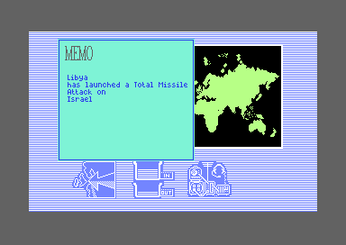
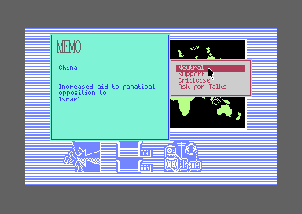
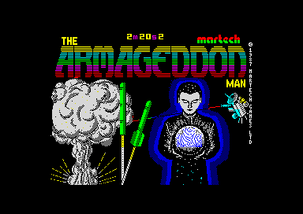

<meta charset="utf-8">
<meta name="viewport" content="width=device-width, initial-scale=1">
<title>The Armageddon Man</title>
<link rel="preconnect" href="https://fonts.googleapis.com">
<link rel="stylesheet" href="https://fonts.googleapis.com/css2?family=Lato:wght@400;700;900&family=IBM+Plex+Mono:wght@400;500&display=swap">
<style>
:root{
  --bg:#23262d; --paper:#e9e7e1; --surface:#ffffff; --surface-2:#f1efea; --line:#d5d3cc; --line-soft:#e0ded8;
  --ink:#2f3136; --ink-soft:#55585f; --ink-mute:#80838a;
  --link:#1f5fa8; --link-hover:#154480; --accent:#1f5fa8;
  --amber:#c25a00; --cyan:#1f5fa8; --coral:#d04a3a; --green:#2a8a4a; --violet:#4a5bd6; --hl:#fff0c2;
  --chip:#2f3136; --chip-ink:#ffffff;
  --c64blue:#40318d; --c64grey:#686868;
  --fd:'Lato',system-ui,sans-serif; --fb:'Lato',system-ui,sans-serif; --fm:'IBM Plex Mono',ui-monospace,Menlo,monospace;
  --col:1080px; --gx:68px; --fs:17px; --lh:1.6; --hw:900; --h1:46px; --h2:26px; --sy:48px; --pp:26px; --r:10px;
  --plate-shadow:0 1px 2px rgba(0,0,0,.05),0 4px 14px rgba(0,0,0,.05);
}
*{box-sizing:border-box}
html{background:var(--bg);min-height:100%}
body{background:var(--paper);color:var(--ink);font-family:var(--fb);font-size:var(--fs);line-height:var(--lh);max-width:var(--col);margin:0 auto;min-height:100vh;padding:0 0 4rem}
h1,h2,h3{font-weight:var(--hw);letter-spacing:-.01em;text-wrap:balance;color:var(--ink);margin:0}
.wrap{padding:0 var(--gx)}
.hero{padding:48px var(--gx) 8px;text-align:left}
.eyebrow{font-family:var(--fm);font-size:12px;letter-spacing:.08em;text-transform:uppercase;color:var(--ink-mute);margin:0 0 10px}
.hero h1{font-size:var(--h1);line-height:1.15;letter-spacing:-.02em;margin:0 0 14px}
.hero .sub{margin:0 0 .6em;color:var(--ink-soft)}
section{padding:var(--sy) 0 24px}
section:last-of-type{border-bottom:none}
.fig{font-family:var(--fm);font-size:12px;letter-spacing:.08em;text-transform:uppercase;color:var(--ink-mute);margin:0 0 10px}
h2.t{font-size:var(--h2);margin-bottom:12px}
.lede{color:var(--ink-soft);margin:0 0 30px}
.plate{background:var(--surface);border:1px solid var(--line);border-radius:var(--r);padding:var(--pp);box-shadow:var(--plate-shadow)}
.cap{font-size:14px;color:var(--ink-mute);margin-top:14px;line-height:1.55}
.cap b{color:var(--ink);font-weight:700}
code{font-family:var(--fm);font-size:.82em;background:var(--chip);color:var(--chip-ink);border-radius:4px;padding:2px 6px;overflow-wrap:break-word;-webkit-box-decoration-break:clone;box-decoration-break:clone}

.am-cv{display:block;width:100%;height:auto;image-rendering:pixelated;background:#000;border-radius:4px}
.am-pics{display:grid;grid-template-columns:repeat(2,minmax(0,1fr));gap:14px}
.am-pics figure{margin:0}
.am-pics img{display:block;width:100%;height:auto;image-rendering:pixelated;border-radius:4px}
.am-pics figcaption{font-size:13px;color:var(--ink-mute);margin-top:6px;line-height:1.45}
.am-tbl{border-collapse:collapse;font-size:14px;width:100%;margin:4px 0 0}
.am-tbl th,.am-tbl td{text-align:left;vertical-align:top;padding:5px 8px;border-bottom:1px solid var(--line-soft)}
.am-tbl th{font-weight:700;color:var(--ink-soft)}
.am-tbl td.am-n,.am-tbl th.am-n{font-family:var(--fm);font-size:13px;white-space:nowrap;text-align:right}
.am-tbl tr.am-on td{background:var(--hl)}
.am-wrapx{overflow-x:auto}
.am-field{display:flex;flex-wrap:wrap;gap:8px 14px;align-items:center;font-size:14px;margin:0 0 12px}
.am-field label{color:var(--ink-soft)}
.am-field select{font:inherit;font-size:14px;padding:3px 6px;border:1px solid var(--line);border-radius:6px;background:var(--surface);max-width:100%}
.am-btn{font:inherit;font-family:var(--fm);font-size:12.5px;background:var(--surface);border:1px solid var(--line);border-radius:6px;padding:5px 11px;color:var(--ink);cursor:pointer;line-height:1.3}
.am-btn:hover{border-color:var(--ink-mute)}
.am-row{display:grid;grid-template-columns:repeat(16,minmax(0,1fr));gap:3px;margin:10px 0 0}
.am-row span{font-family:var(--fm);font-size:11.5px;text-align:center;padding:5px 0;border-radius:4px;background:var(--surface-2);border:1px solid var(--line-soft);line-height:1.25}
.am-row span b{display:block;font-weight:500;color:var(--ink-mute);font-size:10.5px}
.am-row span.am-war{background:var(--coral);border-color:var(--coral);color:#fff}
.am-row span.am-war b{color:#fff}
.am-row span.am-self{opacity:.35}
.am-row span.am-high{background:var(--hl)}
.am-range{width:100%;max-width:300px;accent-color:var(--accent)}
.am-mono{font-family:var(--fm);font-size:13px}
.am-out{font-size:15px;color:var(--ink);margin:12px 0 0;line-height:1.55}
@media (max-width:720px){:root{--gx:16px;--h1:34px;--pp:16px}.am-pics{grid-template-columns:1fr}.am-row{grid-template-columns:repeat(8,minmax(0,1fr))}}
</style>
<!-- tabs -->
<header class="hero">
  <p class="eyebrow">1987 · Martech</p>
  <h1>The Armageddon Man</h1>
  <p class="sub">Countries at perfect peace go to war, Libya starts most games primed for a missile attack, a war fires missiles nobody owns, and the Spectrum version's loading screen loads with every game and is never shown.</p>
</header>
<main class="wrap">

<section id="best-friends">
  <p class="fig">01 · A signed byte</p>
  <h2 class="t">Bug: two countries at perfect peace launch a Total Missile Attack</h2>
  <p class="lede">A hostility of 0 is the friendliest relationship two countries can have, and the game reads it as the most hostile.</p>
  <div class="plate">
    <div class="am-pics">
      <figure><figcaption>China's hostility to Israel set to 0: on the next tick, a Total Missile Attack.</figcaption></figure>
      <figure><figcaption>The war that follows destroys Israel.</figcaption></figure>
    </div>
    <div class="am-wrapx"><table class="am-tbl">
      <tr><th class="am-n">Hostility</th><th>Event on the next tick, in VICE</th><th>Level that matched</th></tr>
      <tr class="am-on"><td class="am-n">0</td><td>0, Total Missile Attack on Israel</td><td>255</td></tr>
      <tr><td class="am-n">1</td><td>21, record trade with Pakistan</td><td>China's 85, against its hostility to Pakistan</td></tr>
      <tr><td class="am-n">2</td><td>21, record trade with Pakistan</td><td>the same</td></tr>
    </table></div>
    <p class="cap">China's hostility to Israel (<code>$5D34</code>) set to 0, 1 and 2 in a game in week 1, with a stop on <code>run_event</code> (<code>$B161</code>) for the event the next tick started. At 1 and 2 nothing matched for Israel and the search went on to Pakistan.</p>
  </div>
  <p>Names in this type, such as <code>country_events</code>, are the game's routines and tables as the Source code tab names them, and a number after a dollar sign, such as <code>$AE77</code>, is written in hexadecimal, base 16: here, the address in the C64's memory where the routine starts.</p>
  <p>At each tick of the game's clock, <code>country_events</code> (<code>$AE77</code>) holds a country's hostility to another against the 32 levels of its event ladder (<a href="index.html#events">How it works</a>). It subtracts the hostility from the level to see how far apart they are. A byte holds 0 to 255, and read as a signed byte, 128 to 255 stand for the negative numbers -128 to -1, so when the result is 128 or more the code takes it as negative and turns it round, to get the distance either way. Every country's top level, for the Total Missile Attack, is 255. With a hostility of 0, 255 less 0 is 255, <code>$FF</code>, which as a signed byte is -1: one away, close enough to match.</p>
  <p>The code lets a player get there. Answers, talks and the OUT tray's letters lower hostility, and <code>hostility_sub</code> (<code>$B74D</code>) stops it at 0 rather than letting it wrap. The letter asking two countries to improve their relations takes 20 off each side's hostility when it works. A Commander who keeps sending it to the same pair makes them friends, then makes them go to war.</p>
</section>

<section id="libya">
  <p class="fig">02 · Libya's start</p>
  <h2 class="t">Bug: Libya starts most games one step from a Total Missile Attack</h2>
  <p class="lede">At the start of a game, Libya's hostility to each country is either almost nothing or almost the maximum, at random.</p>
  <div class="plate">
    <div class="am-field"><button type="button" class="am-btn" id="am-libya-roll">Start a new game</button>
      <label for="am-libya-week">Week</label><input type="range" id="am-libya-week" class="am-range" min="1" max="16" value="1"><span class="am-mono" id="am-libya-wv">1</span></div>
    <div class="am-row" id="am-libya" aria-live="polite"></div>
    <p class="am-out" id="am-libya-out"></p>
    <p class="cap" id="am-libya-cap">Libya's hostility to each country at the start of a game, made by <code>relations_init</code> (<code>$951B</code>) and then raised by one at the first week's end, as <code>new_game</code> does. Red marks a hostility within one of Libya's level for the Total Missile Attack, 255, and yellow one that started at 241 or more. The week slider adds a step for each week's end after the first, the slowest the climb can be. The page draws its random numbers the way <code>relations_init</code> does but from the browser's own generator.</p>
  </div>
  <p><code>relations_init</code> starts each country's hostility to every other at the level of its event 20 on its ladder, give or take a random 0 to 15. Event 20 is friendly press. Libya never starts that event, so its level is 0, and 0 take away a random number wraps round to 241 to 255. Each of Libya's 15 starting hostilities is close to a coin toss between 0 to 15 and 241 to 255.</p>
  <p>The week's end that opens every game then raises every hostility by one, stopping at 255. Libya's levels skip from 255 for a Total Missile Attack to 234, so a start of 253, 254 or 255 ends at 254 or 255, within one of the attack. The chance is 3 in 32 for each country, and about three games in four begin with at least one. None of Libya's other hostilities matches any level, so the first time the clock picks Libya, the search finds that country and Libya launches a Total Missile Attack, unless the U.N.N. Force stands in Libya or in its target.</p>
  <p>The other high ones follow. Each climbs a step at every week's end, and another each time the clock picks Libya and it finds nothing to do, so by week 13 at the latest each one is ready, unless the Commander brings it down.</p>
  <div class="plate">
    <div class="am-pics">
      <figure><figcaption>The first event of a new game, in week 1.</figcaption></figure>
    </div>
    <p class="cap">A game in VICE, left to start on its own after the last one ended and played only by closing each window. Libya's hostilities at the start: 255 to Israel and to Pakistan, 253 to the Central American Alliance. The first event the clock started, about five seconds in, was Libya's Total Missile Attack on Israel.</p>
  </div>
</section>

<section id="neutral">
  <p class="fig">03 · Neutral</p>
  <h2 class="t">Secret: answering Neutral to terrorism ends the game half the time</h2>
  <p class="lede">The game never warns the player, and the manual does not say it.</p>
  <div class="plate">
    <div class="am-pics">
      <figure><figcaption>China's aid to the opposition in Israel, answered Neutral.</figcaption></figure>
      <figure><figcaption>The game ends at once, in week 1.</figcaption></figure>
    </div>
    <p class="cap">China's hostility to Israel set to 117, China's level for event 18, in VICE; Neutral chosen.</p>
  </div>
  <p>Four events share one answer script for Neutral (<code>ev15_18_neutral</code>, <code>$A415</code>): a diplomat assassinated, an embassy mobbed, a car bomb, and aid to a fanatical opposition. The script posts a request to reprimand the attacker, then rolls a random byte. Below 128, which is half the time, it runs <code>ev15_18_1</code>, and the Commander is "recalled to earth immediately. Due to your incompetence." The only other answer that ends the game is Agree, when a country's mail asks for a new Commander.</p>
</section>

<section id="phantom">
  <p class="fig">04 · The launchers</p>
  <h2 class="t">Bug: a war fires more missiles than the two countries own</h2>
  <p class="lede">The last missiles of each type can fly twice or three times.</p>
  <div class="plate">
    <div class="am-wrapx"><table class="am-tbl">
      <tr><th>China on Israel, in VICE</th><th class="am-n">Fired, by the stocks</th><th class="am-n">Landed</th></tr>
      <tr><td>China's missiles, at Israel</td><td class="am-n">16</td><td class="am-n">18</td></tr>
      <tr><td>Israel's missiles, at China</td><td class="am-n">85</td><td class="am-n">90</td></tr>
      <tr class="am-on"><td>The war</td><td class="am-n">101</td><td class="am-n">108</td></tr>
    </table></div>
    <p class="cap">China's hostility to Israel set to 0, fire pressed through the memos, with stops counting <code>war_damage</code> (<code>$CC10</code>), <code>missile_done</code> (<code>$CAE9</code>) and <code>radiation_up</code> (<code>$CC5A</code>): 108, 108 and 107. Israel takes 16 hits to destroy, so China fires 16; Israel's whole stock, 5 + 50 + 30, comes back.</p>
  </div>
  <p>Each side has three launchers. A launcher takes the first type whose count is not 0, MX1, then MX2, then MX3, and launches one (<code>launcher_pick</code>, <code>$C932</code>). The count goes down only when a missile lands or is shot down (<code>missile_done</code>), so while a missile is in the air its type still counts as available. With one MX1 left, all three launchers see a count of 1 and each launches one. Two of the three are missiles the country never had.</p>
</section>

<section id="ruins">
  <p class="fig">05 · Radiation</p>
  <h2 class="t">Bug: hitting a destroyed country still adds radiation</h2>
  <p class="lede">The hit that destroys a country adds none; the hits after it do.</p>
  <p><code>war_damage</code> (<code>$CC10</code>) adds one to the target's hits taken. When that reaches its limit, the country is destroyed: its hits taken become <code>$FF</code> and nothing goes on the radiation. Every other hit calls <code>radiation_up</code> (<code>$CC5A</code>), a 1 in 4 chance of one more point, and that includes a hit on a country already destroyed, whose count stays at <code>$FF</code>. In China's war on Israel, two of the 18 hits on Israel came after it was destroyed, and <code>radiation_up</code> was called for 107 of the 108 hits: every one but the hit that destroyed Israel.</p>
</section>

<section id="title">
  <p class="fig">06 · The title picture</p>
  <h2 class="t">Secret: the Spectrum's loading screen loads with every game and is never shown</h2>
  <p class="lede">Nine kilobytes of the image hold a title screen converted from the Spectrum version, and no code that runs ever puts it on the screen.</p>
  <div class="plate">
    <div class="am-pics">
      <figure><canvas id="am-title" class="am-cv" width="384" height="272"></canvas><figcaption>The C64's picture, drawn by the page from the listing.</figcaption></figure>
      <figure><figcaption>The Spectrum version's loading screen.</figcaption></figure>
    </div>
    <p class="cap" id="am-title-cap">The C64's picture is the bitmap at <code>$2000</code> and its colours at <code>$0C00</code>, in the mode the leftover routine <code>dev_show_title</code> (<code>$10C6</code>) sets, a high-resolution bitmap in the first video bank with a black border. The Spectrum's is <code>ArmageddonManThe.scr</code> from Spectrum Computing's archive, drawn in the Spectrum's colours.</p>
  </div>
  <p>The picture is the Spectrum version's loading screen. It is 256 by 192 pixels, the size of the Spectrum's screen, set four character columns in from the left as the game's own screen is. A Spectrum screen gives each square of 8 by 8 pixels two colours, and so does the C64's high-resolution bitmap mode, so the picture could come across square by square. Of its 768 squares, 762 hold the Spectrum's pixels bit for bit. Each of the Spectrum's colours became one of the C64's: blue, red, magenta as purple, green, cyan as light blue, yellow and white, with the Spectrum's brighter shades dropped. The six squares that differ are in the top row, where the Spectrum's screen has a line of characters reading 2m20s2 and the C64's is blank.</p>
  <p>The picture comes in with the game and stays in memory. During the fast load the screen is blank with stripes in the border, and at the hand-over the video chip is in text mode. The only instruction that points the video chip at the picture is in <code>dev_show_title</code>, part of a loader left over from development (<a href="#loader">below</a>), and the game writes over that loader before it could run. As the game goes on, its windows save what they cover into the same memory from <code>$2000</code> up, and the picture is lost.</p>
</section>

<section id="loader">
  <p class="fig">07 · A developer's loader</p>
  <h2 class="t">Secret: the loader the game was built with is still in memory</h2>
  <p class="lede">At <code>$1000</code> sits a small program that loads the game in four files through the C64's own disk routines.</p>
  <div class="plate">
    <div class="am-wrapx"><table class="am-tbl" id="am-files"></table></div>
    <p class="cap">The file names from <code>dev_file_names</code> (<code>$10B2</code>), with what <code>dev_loader</code> (<code>$1000</code>) does with each.</p>
  </div>
  <p>The loader calls the KERNAL, the C64's built-in routines, to load from disk drive 8: TITCOL, the picture's colours, to <code>$0C00</code>, and TITLES, its bitmap, to <code>$2000</code>. It shows them, loads SWMA and copies it to <code>$E000</code>, where the main screen's picture lives, then loads PAIN to <code>$4000</code>, switches the ROMs back in and jumps to <code data-part="">$0120</code>. The released game arrives in one piece through Martech's fast loader instead, and <code>game_start</code> (<code>$4E96</code>) copies the game's state over <code>$1000</code> to <code>$1320</code> for RAMSAVE before anything could call the old loader.</p>
</section>

<section id="unheard">
  <p class="fig">08 · Silence</p>
  <h2 class="t">Secret: seventeen sound effects, an alarm and three jingles</h2>
  <p class="lede">The game plays one tune and no sound effects at all, but the sound code holds much more.</p>
  <p>No instruction calls the sound effect player or the alarm, and no table holds their addresses, so they never sound. Tunes 1, 2 and 3 are in the tune table beside the game's music, and nothing starts them either. All of them can be heard on the How it works page: the <a href="index.html#music">three jingles</a> and the <a href="index.html#sound">effects and the alarm</a>, played by the game's own code.</p>
</section>

<section id="talks">
  <p class="fig">09 · Talks</p>
  <h2 class="t">Bug: the coin tossed after talks decides nothing</h2>
  <p class="lede">After urgent talks, the script tosses a coin and then ignores it.</p>
  <p>The script that follows urgent talks (<code>after_talks</code>, <code>$9FDB</code>) rolls a chance of 128 in 256, and goes on to the next part without testing the result. The script language tests a roll with command <code>$10</code>, and there is none before the jump. The five bytes after the jump, at <code>$9FE0</code>, would raise both countries' hostility by 10, and nothing reaches them. The coin decides nothing.</p>
</section>

<section id="mail">
  <p class="fig">10 · The IN tray</p>
  <h2 class="t">Secret: two letters that never arrive</h2>
  <p class="lede">The IN tray has scripts for seventeen kinds of mail, and two of them are never posted.</p>
  <p>Mail 9 is a warning that one country "is posing a threat to world peace. Please caution them", with Ignore, Agree and Disagree answers that move trust and hostility (<code>mail_threat_warning_script</code>, <code>$9D18</code>). Mail 16 has a script and three answers too (<code>mail_16_script</code>, <code>$9D99</code>), but no text: the table of mail texts (<code>mail_texts</code>, <code>$9C46</code>) holds 16 addresses, for mail 0 to 15, and the place for a 17th is the first address in the OUT tray's table, which leads to the OUT tray's first letter. No script posts either one.</p>
</section>

<section id="intercepts">
  <p class="fig">11 · Radio</p>
  <h2 class="t">Bug: Japan and the Eastern Block read their radio messages from code</h2>
  <p class="lede">The table that chooses each country's radio messages stops two countries short.</p>
  <div class="plate">
    <div class="am-wrapx"><table class="am-tbl" id="am-ilevels"></table></div>
    <p class="cap">Eight levels a country from <code>intercept_levels</code> (<code>$91A4</code>); the last two rows are the bytes of <code>relations_row</code> (<code>$9214</code>), the routine after the table.</p>
  </div>
  <p>A message picked up on the radio is chosen like an event: the first of the sender's eight levels within 9 of its hostility to another country picks one of eight messages. The table holds rows for 14 countries. Japan's and the Eastern Block's rows would be the 15th and 16th, where the code of <code>relations_row</code> begins, so their messages are chosen by the bytes of two instructions.</p>
</section>

<section id="511">
  <p class="fig">12 · Missile power</p>
  <h2 class="t">Bug: a missile power of 511 counts as none</h2>
  <p class="lede">One script command asks whether a country has any missiles, and adds up the wrong things to find out.</p>
  <p>Script command <code>$49</code> (<code>script_has_missiles</code>, <code>$B88C</code>) sets its flag when a country's missile power, a 16-bit number <code>demand_check</code> worked out, is not 0. It adds the two bytes together and tests the sum, which is 0 when they add up to 256 as well. A power of 511, 766, 1021 or 1276 reads as no missiles at all.</p>
</section>

</main>
<footer style="margin:16px 0 0;padding:22px var(--gx) 0;border-top:1px solid #e0ded8;font-family:'IBM Plex Mono',ui-monospace,Menlo,monospace;font-size:12px;color:#80838a"><a href="https://github.com/gamesexplained/gamesexplained" style="color:#1f5fa8;text-decoration:none">GitHub</a> · <a href="https://discord.gg/3V9GWyRDWV" style="color:#1f5fa8;text-decoration:none">Discord</a><br>© Games Explained contributors. Write-ups, facts and symbol maps are available under <a href="https://creativecommons.org/licenses/by-sa/4.0/" style="color:#1f5fa8;text-decoration:none">CC BY-SA 4.0</a>; code under <a href="https://opensource.org/licenses/MIT" style="color:#1f5fa8;text-decoration:none">MIT</a></footer>
<script src="../../lib/c64.js"></script>
<script>
'use strict';
/* am-libya */
// relations_init ($951B) for one country A's row, as new_game ($924C) runs it, then the week's end
// that opens every game (week_end, $BAA1), which raises every hostility by one, stopping at $FF
// (relations_all_up, $7E0D). Each hostility is A's event 20 level (event_levels, $958C + 32 × A +
// 20) plus a random 0 to 15 (random & $0F), negated (eor #$FF, adc #1) when a second random byte is
// below 128, kept as a byte. rand() stands for the game's random number (random, $7BAE), called
// twice for each of the 16 countries B in turn.
function amStartRow(levels, a, rand) {
  const row = [];
  for (let b = 0; b < 16; b++) {
    let r = rand() & 0x0F;
    if (rand() < 0x80) r = (r ^ 0xFF) + 1 & 0xFF;
    const h = levels[32 * a + 20] + r & 0xFF;
    row.push(h === 0xFF ? h : h + 1);
  }
  return row;
}
// end of am-libya

const $ = (id) => document.getElementById(id);
const NAMES = ['Canada', 'U.S.A', 'Central American Alliance', 'European Unite', 'Libya', 'Argentina', 'Black African Republic',
  'South Africa', 'Israel', 'Islamic Alliance', 'Pakistan', 'India', 'Australia', 'China', 'Japan', 'Eastern Block'];
const SHORT = ['CAN', 'USA', 'CAA', 'EU', 'LIB', 'ARG', 'BAR', 'SA', 'ISR', 'IA', 'PAK', 'IND', 'AUS', 'CHN', 'JPN', 'EB'];
function missing(el, what) {
  const p = document.createElement('p');
  p.className = 'cap';
  p.textContent = 'This needs ' + what + ', which loads only in the built site.';
  el.appendChild(p);
}

function libyaWidget(ram) {
  const levels = ram.slice(0x958C, 0x958C + 512), week = $('am-libya-week');
  let row = [];
  function show() {
    const w = +week.value, hot = [];
    $('am-libya-wv').textContent = String(w);
    $('am-libya').innerHTML = row.map((h0, b) => {
      const h = Math.min(255, h0 + w - 1), primed = b !== 4 && h >= 254;
      if (primed) hot.push(NAMES[b]);
      return '<span class="' + (b === 4 ? 'am-self' : primed ? 'am-war' : h0 >= 241 ? 'am-high' : '') + '" title="' + NAMES[b] + '"><b>' + SHORT[b] + '</b>' + h + '</span>';
    }).join('');
    $('am-libya-out').textContent = hot.length ? 'In week ' + w + ' Libya is ready for a Total Missile Attack on ' + hot.join(', ') + '.' : 'In week ' + w + ' Libya is not yet ready for a Total Missile Attack.';
  }
  function roll() {
    row = amStartRow(levels, 4, () => Math.floor(Math.random() * 256));
    show();
  }
  $('am-libya-roll').addEventListener('click', roll);
  week.addEventListener('input', show);
  roll();
}

function titleWidget(ram) {
  const vic = new Array(47).fill(0);
  vic[0x11] = 0x3B; vic[0x16] = 0xC8; vic[0x18] = 0x39; vic[0x19] = 0x70; vic[0x20] = 0xF0; vic[0x21] = 0xF0;
  C64.drawFrame($('am-title'), { lines: 312, cycles: 63, vic, cia2: [0xC7, 0x3F], writes: [], mem: ram.slice(), colourMem: new Uint8Array(1024) }, 1);
}

function tables(ram) {
  const names = [];
  let p = 0x10B2;
  for (const n of [6, 6, 4, 4]) { names.push(String.fromCharCode(...ram.slice(p, p + n))); p += n; }
  const what = ['the title picture\'s colours, loaded to <code>$0C00</code>', 'the title picture\'s bitmap, loaded to <code>$2000</code> and shown',
    'loaded to <code>$4000</code> and copied to <code>$E000</code>-<code>$FF3F</code>, where the main screen\'s picture is', 'loaded to <code>$4000</code>; the loader then jumps to <code data-part="">$0120</code>'];
  $('am-files').innerHTML = '<tr><th>File</th><th>What the loader does with it</th></tr>' + names.map((n, k) => '<tr><td class="am-n" style="text-align:left">' + n + '</td><td>' + what[k] + '</td></tr>').join('');
  let h = '<tr><th>Country</th>' + [0, 1, 2, 3, 4, 5, 6, 7].map((k) => '<th class="am-n">' + k + '</th>').join('') + '</tr>';
  for (let c = 0; c < 16; c++) {
    const row = ram.slice(0x91A4 + 8 * c, 0x91A4 + 8 * c + 8);
    h += '<tr' + (c >= 14 ? ' class="am-on"' : '') + '><td>' + NAMES[c] + '</td>' + Array.from(row).map((v) => '<td class="am-n">' + v + '</td>').join('') + '</tr>';
  }
  $('am-ilevels').innerHTML = h;
}

if (typeof C64 === 'undefined') {
  for (const id of ['am-libya', 'am-title', 'am-files', 'am-ilevels']) missing($(id).parentNode, "the site's C64 library");
} else {
  C64.load('listing.json').then((L) => {
    libyaWidget(L.ram);
    titleWidget(L.ram);
    tables(L.ram);
  });
}
</script>
